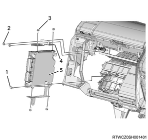

ECM removal (4JK1)
1. ECM safety information
Caution
- When replacing the ECM, the vehicle data must be written into the new ECM.
- When replacing the ECM, before removal upload the old ECM data to a scan tool.
- When communication with a scan tool is not possible, remove as-is.
- Use the same scan tool for the replacement procedure from beginning until end. If the scan tool is changed during the procedure, the correct information cannot be written.
- If the scan tool is changed during the procedure, the correct information cannot be written.
Note
- When replacing the ECM, this procedure is required.
1. Check the Injector ID Code of the cylinder head cover.
Note
- Record the injector ID codes from the cylinder head cover labels.
Caution
- Only perform this procedure when the injectors have not been replaced in the past.

- Cylinder No. 1 injector ID code
- Cylinder No. 2 injector ID code
- Cylinder No. 3 injector ID code
- Cylinder No. 4 injector ID code
- Injector ID code label
Note
- If the injector ID codes have been recorded from the cylinder head cover labels, do not perform the following procedure.
2. Disconnect the harness connector from the injector.
Note
- Disconnect all of the harness connectors from the injectors.
3. Check the Injector ID Code of the injector.
Note
- Record all of the harness connector housing numbers.
- The following diagram shows the proper order of the injector ID codes.
- 72 04 F9 F8 F0 00 F0 E7 09 F6 F9 96

- Injector ID code
- Injector
4. Connect the harness connector to the injector.
Note
- Connect the harness connectors to all of the injectors.
2. ECM upload
Note
- When replacing the ECM, this procedure is required.
- When the ECM to be replaced cannot communicate with a scan tool, do not perform this procedure.
1. Connect a scan tool to the DLC.
2. Turn ON the ignition switch.
3. Select the Diagnostics.
4. Select the Engine.
5. Select the engine model.
6. Select Programming.
7. Select the Injector ID Code.
8. Select the Injector ID Upload.
Note
- Follow the directions on the screen and upload the injector ID codes to a scan tool.
3. ECM reset
ECM reset (PESS control unit)
Note
- If equipped with a PESS, this procedure is required.
- If replacing the ECM, this procedure is required.
- If the ECM to be replaced cannot establish communication with the scan tool, do not perform this operation.
Caution
- If the PESS control unit, the ICU, and the ECM are reset at the same time, the transponder key must be replaced.
1. Connect a scan tool to the DLC.
2. Turn ON the ignition switch.
3. Select the Diagnostics.
4. Select the Body.
5. Select the PESS.
6. Select the Additional Function.
7. Select Reset Engine Control Module.
Note
- Follow the on-screen instructions to reset the immobilizer security information in the ECM.
Caution
- Entering an incorrect security code causes a security wait time.
- When turning the ignition switch ON or OFF, wait at least 5 seconds before turning it ON or OFF each time.
8. Turn OFF the ignition switch.
Note
- After the ECM reset is completed, turn OFF the ignition switch for 1 minute.
9. Turn ON the ignition switch.
Note
- Verify that the engine does not start with all electronic keys.
ECM reset (ICU)
Note
- If an immobilizer is equipped, this procedure is required.
- When replacing the ECM, this procedure is required.
- When the ECM to be replaced cannot communicate with a scan tool, do not perform this procedure.
Caution
- When resetting the ICU and ECM at the same time, replacement of the transponder key is required.
10. Connect a scan tool to the DLC.
11. Turn ON the ignition switch.
12. Select the Diagnostics.
13. Select the Body.
14. Select Immobilizer.
15. Select the Additional Function.
16. Select Reset Engine Control Module.
Note
- Follow the directions on the screen and reset the ECM immobilizer security information.
Caution
- If an incorrect security code is input, the security wait time begins.
- When turning the ignition switch to ON or OFF, wait at least 5 seconds.
17. Turn OFF the ignition switch.
Note
- After the ECM reset is completed, turn OFF the ignition switch for 1 minute.
18. Turn ON the ignition switch.
Note
- Verify that the engine does not start with all transponder keys.
4. Battery ground cable disconnect
1. Open the engine hood assembly.
2. Disconnect the battery ground cable from the battery.
Caution
- Do not disconnect within 1 minute after turning OFF the ignition switch.
5. Glove box removal
1. Remove the glove box from the instrument panel.

- Glove box
- Instrument panel assist side lower cover
6. Instrument panel assist-side lower cover removal
1. Remove the instrument panel assist-side lower cover from the instrument panel.
Note
- Remove the 4 screws.

7. ECM removal
1. Remove the ECM from the reinforcement.
Note
- Remove it together with the ECM bracket.
2. Remove the ECM from the ECM bracket.

- Bolt
- Nut
- Bolt
- ECM bracket
- ECM